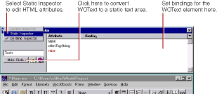
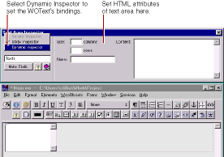

PATH
Documentation > WebObjects 4.5 >
Tools and Techniques
Dynamic and Static Inspectors
Most dynamic elements have static HTML counterparts (with the exception of abstract dynamic elements, such as: WOString, WORepetition, WOConditional, and WOCustom.) The Inspector for these elements has two states:
-
The Dynamic Inspector, which you use to set the bindings for the element (see
Binding Elements
).
-
The Static Inspector, which you use to set the HTML attributes for the element's static counterpart.

This example shows the Inspector for a dynamic text area element. It displays the bindable attributes for this element. If you select Static Inspector from the pop-up list, the Text Area Inspector appears. This is the same Inspector you would see for a static text area element (<TEXTAREA>) and allows you to set its HTML attributes (such as
COLS
or
ROWS
).
Note:
You can also set the HTML attributes using the Dynamic Inspector. The Static Inspector is provided for convenience only.

To switch back to the WOText Inspector, select Dynamic Inspector from the pop-up list.
In addition, you can convert any dynamic element into its static counterpart, or vice versa:
-
When inspecting a dynamic element, if you click Make Static, the element becomes its static counterpart (if it has one), and the Static Inspector appears.
-
When inspecting a static element, if you click Make Dynamic, the element becomes its dynamic counterpart. Both the Static and Dynamic Inspectors are now available.
The following table shows the dynamic counterpart for each static element.
Static Element
|
Dynamic Counterpart
|
|
Image
|
WOImage, WOActiveImage
|
|
Form
|
WOForm
|
|
Textfield
|
WOTextField
|
|
Text Area
|
WOText
|
|
Button
|
WOSubmitButton, WOResetButton, WOImageButton
|
|
Checkbox
|
WOCheckBox
|
|
Radio Button
|
WORadioButton
|
|
Select
|
WOBrowser, WOPopupButton
|
|
Hyperlink
|
WOHyperlink
|
|
Applet
|
WOApplet
|
|
Other
|
Generic WebObject
|
If you convert a static element to its dynamic counterpart by clicking Make Dynamic, and there is no direct counterpart, the element becomes a generic WebObject whose element name is the HTML tag for the static element (see
Generic WebObjects
).
© 1999 Apple Computer, Inc. – (Last Updated July 27 99)